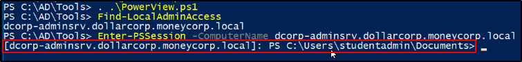
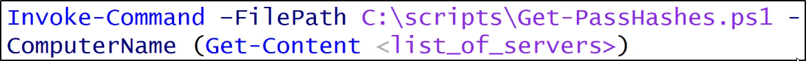

Lateral Movement
La fase di Lateral Movement, assieme a quella di
"Domain Admin Privs" e "Cross Trusts Attacks"
E' una fase di inizio ciclo, dove cerchiamo di spostarci in modo laterale,
ottenere altre macchine ed utenti, per infine sfruttare le trust e spostarsi.
In questo modo il ciclo viene effettuato fin quando è possibile.
Powershell Remoting
https://docs.microsoft.com/en-us/powershell/scripting/learn/remoting/running-remote-commands?view=powershell-7.1
Puoi pensarlo come un protocollo per l'amministrazione remota.
E' come psexec (usato per l'amministrazione remota) ma su steroidi.
Powershell Remoting Wsta prendendo sempre più piede.
E' abilitato di base su Windows Server 2012 in su.
Per farlo, bisogna abilitare il remoting (Enable-PSRemoting)
su una Windows Machine da desktop.
Servono privilegi da admin per farlo!
Ottieni una shell elevata sul sistema remoto,
se vengono usate credenziali da Admin per l'autenticazione.
(per default setting succede questo)
Altro punto di nota è che genera traffico encrypted, perché è encrypted
Modi di Poweshell Remoting
Esistono due modi: One-to-One e One-to-Many.
Il Metodo One-to-One è, tramite PSSession è:- Interattivo
- Runna in un nuovo processo (wsmprovhost)
- E' stateful
Cmdlets utli:- New-PSSession
- Enter-PSSession
Ricorda: Dobbiamo avere privilegi da Admin su quella macchina che accediamo!


Da come è possibile notare, le connessioni sono stateful:
Esempio: salvo una variabile, esco, rientro ed eseguo la variabile.
Se non chiudo la connessione ma semplicemente ci esco, rimane stateful.

Questi comandi non possono caricare script o funzioni:
Possiamo farlo prima creando una sessione e poi usando Invoke-Command sulla sessione.

Il metodo One-To-Many:- E' conosciuto anche come "Fan-out remoting"
- NON è interattivo
- Esegue i comandi in parallelo
Cmdlets utili:
Per il cmdlet Invoke-Command, permette di eseguire anche scripts.
Può eseguire comandi o script su:- Computer remoti multipli
- Su sessioni disconnesse (v3)
- Come job in background
- Etc.
E' uno dei modi migliori per passare hash, usare credenziali
oppure eseguire comandi su computer remoti.
Per passare un username e password, si può usare l'opzione -Credential
Ecco un esempio per un singolo Computername:

Puoi usare questo comando per eseguire comandi oppure scriptblocks:

Puoi usare questo comando per eseguire script da file:



Qui indica che nel contesto e nella sessione, usa un ConstrainedLanguage,
mentre noi ne utilizziamo uno diverso:

Il punto è che nella ConstrainedLanguage mode non considera safe alcuni Cmdlets e Type,
Non possiamo usare classi .NET ed altri elementi.
Ci permette di utilizzare solamente ciò che è disponibile su quella macchina come Cmdlets.
Poweshell remoting è molto forte:
permette di runnare funzioni locali su sistemi remoti.

Ad esempio, se creiamo una semplice funzione:


Ora proviamo a caricarla su un altro host:
Come si nota funziona!

Questo comando è utile nel caso la funzione richieda degli arguments:

Per rendere i comandi di Invoke-Command "stateful",
possiamo creare delle sessioni per ogni macchina
ed inviare i comandi: